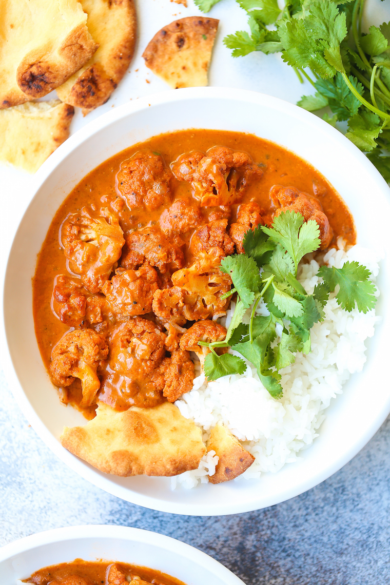

BUTTER CAULIFLOWER BOWLS

INGREDIENTS
- 1 cup basmati rice
- 3 tablespoons unsalted butter
- 3 cloves garlic, minced
- ½ medium sweet onion, diced
- 1 tablespoon freshly grated ginger
- 1 head cauliflower, cut into florets
- ½ cup heavy cream
- ¼ cup chopped fresh cilantro leaves
INTRUCTIONS
- In a large saucepan of 2 cups water, cook rice according to package instructions,set aside.
- Melt butter in a large stockpot or Dutch oven over medium heat. Add garlic and onion, and cook, stirring frequently, until onions have become translucent, about 2-3 minutes.
- Stir in ginger, garam masala, chili powder, cumin and tomato paste until fragrant, about 1 minute.
- Stir in tomato sauce and vegetable stock; season with salt and pepper, to taste. Bring to a boil; reduce heat and simmer, stirring occasionally, until reduced and slightly thickened, about 5-7 minutes.
- Stir in cauliflower until tender, about 8-10 minutes.
- Stir in heavy cream until heated through, about 1 minute. Stir in cilantro; season with salt and pepper, to taste.
- Serve immediately with rice.